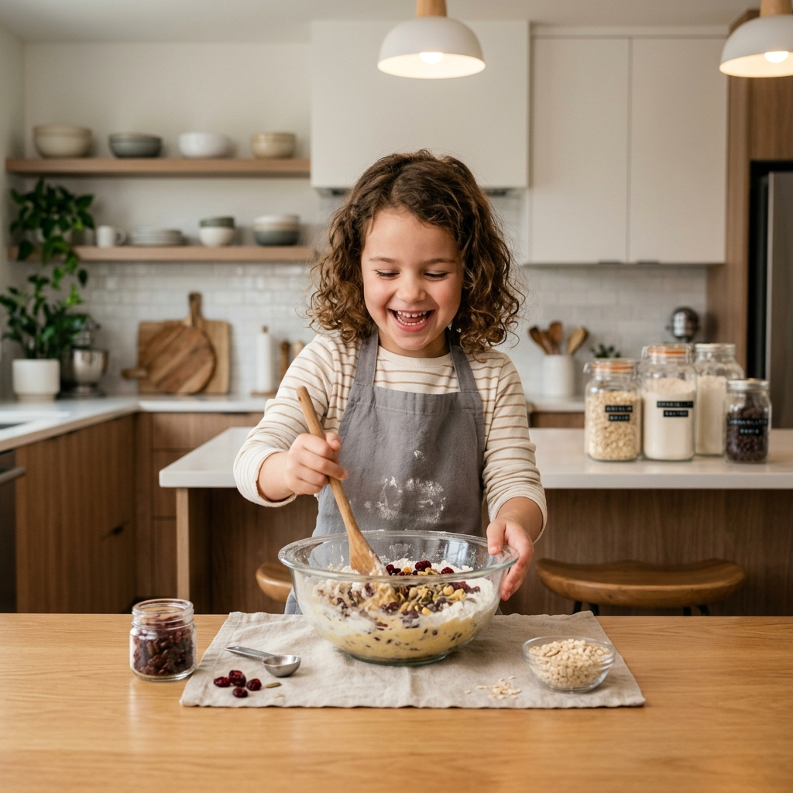
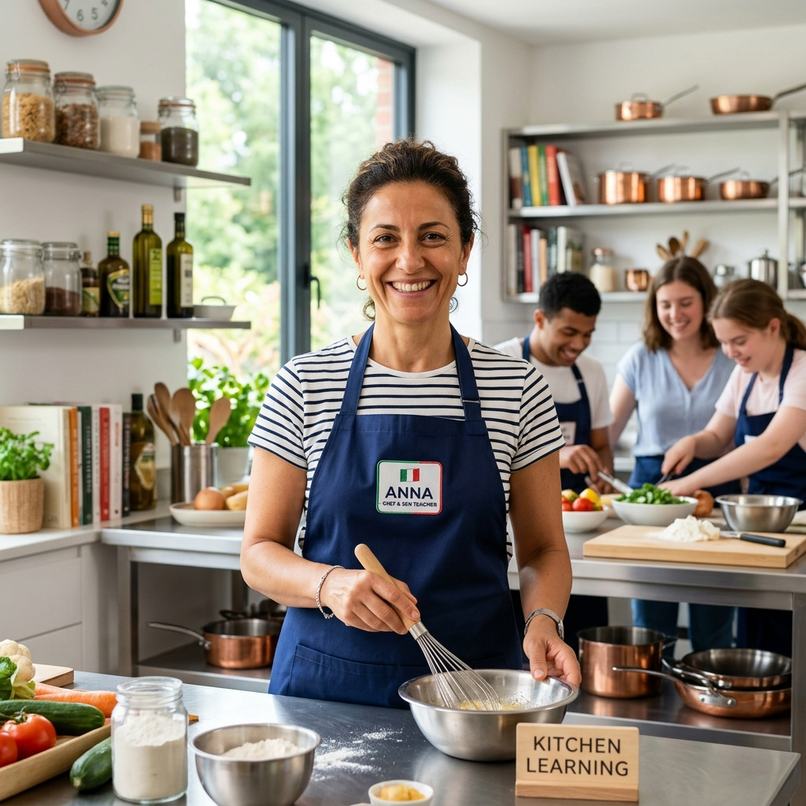
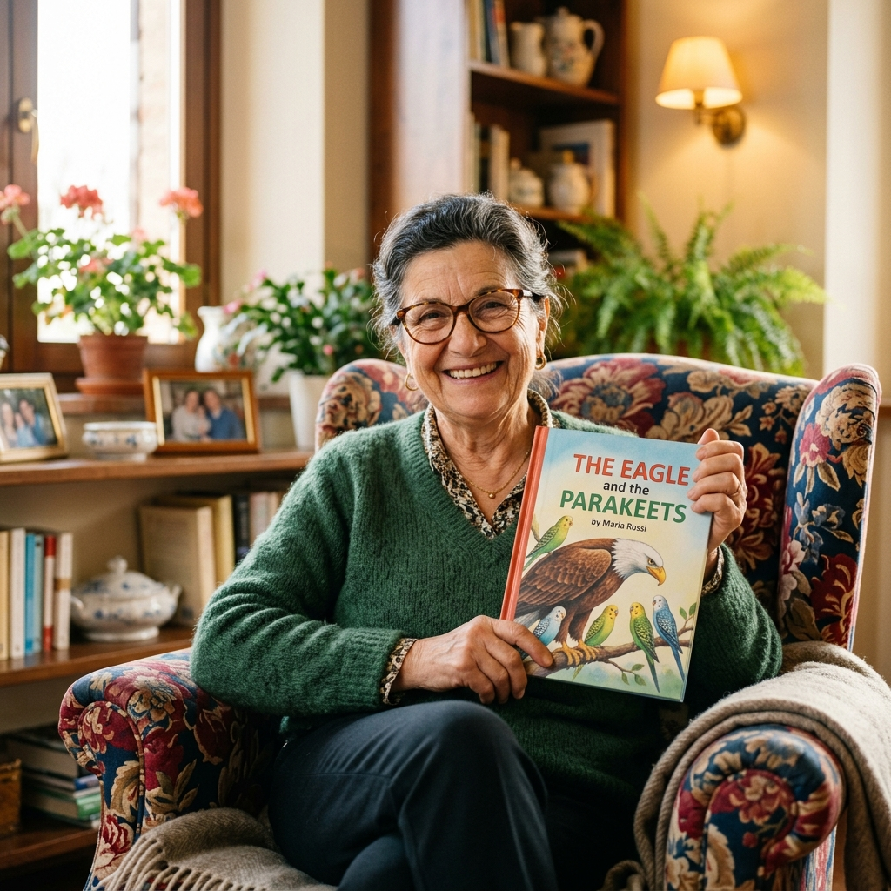
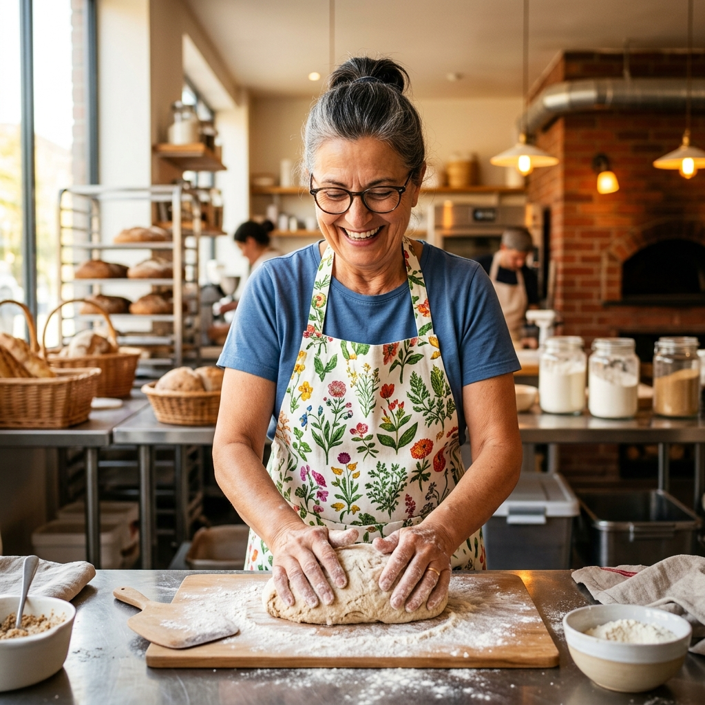
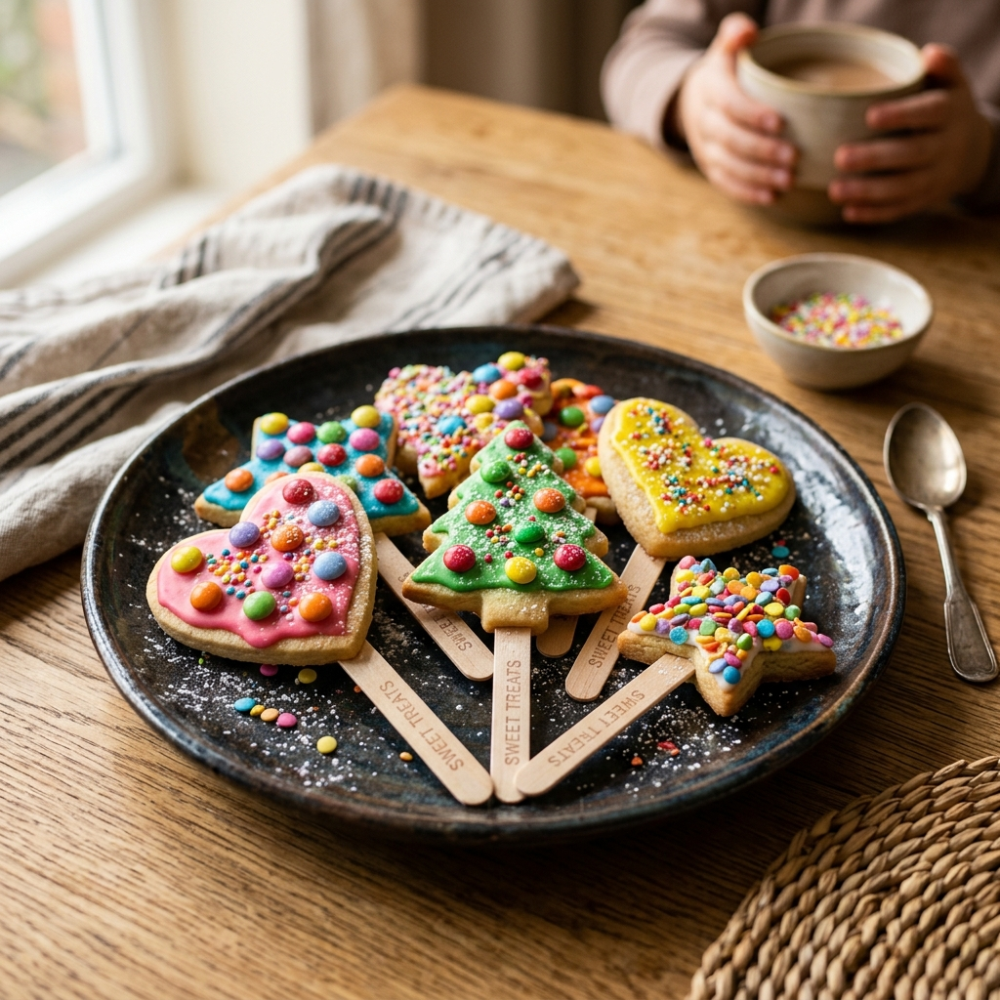
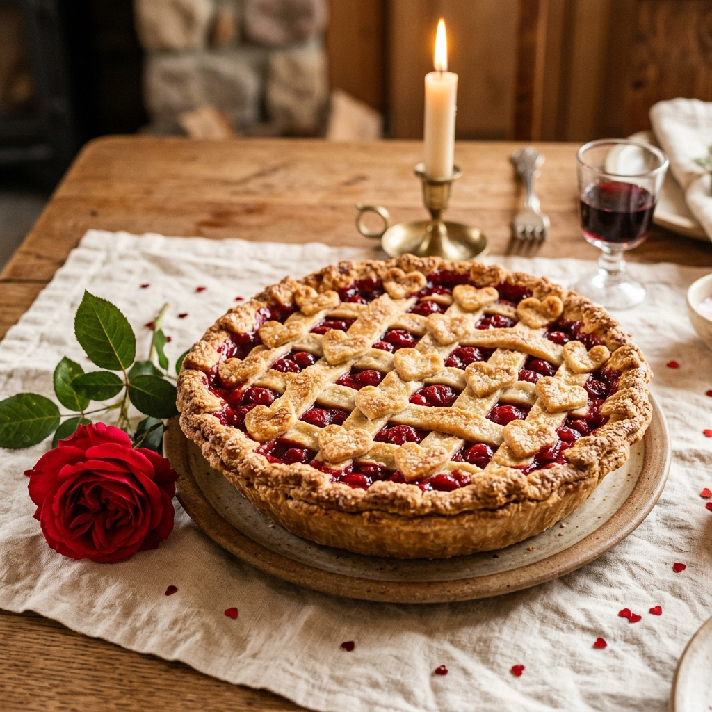
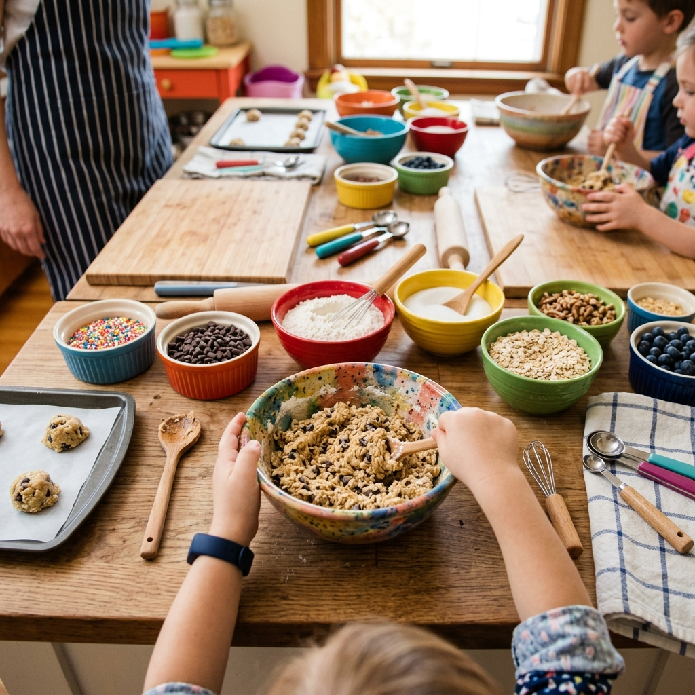

Lucas
Co-Founder & Tech Lead
Specialist SEN teacher and tutor with over 14 years of classroom and 1-to-1 experience. Lucas oversees our technical systems and curriculum structure to ensure a seamless learning experience.
Tailored, sensory-friendly online culinary education developed by experienced SEN educators and culinary specialists.

Fostering independence, fine motor development, sensory exploration, and vital life skills in a safe, structured online environment.
Co-Founder & Tech Lead
Specialist SEN teacher and tutor with over 14 years of classroom and 1-to-1 experience. Lucas oversees our technical systems and curriculum structure to ensure a seamless learning experience.

Co-Founder & Head Chef
Italian Chef and specialist SEN teacher with over 10 years of experience teaching culinary arts across London schools. Anna leads recipe design and interactive cooking sessions.
The culinary heart behind Able and Beyond, sharing her passion for inclusive cooking and storytelling.
Anna Maria Racco is a passionate Italian Chef and specialist SEN teacher with over 10 years of experience teaching culinary arts across London schools. Her journey began with a simple belief: the kitchen is a place where everyone, regardless of their needs, can shine, learn, and grow.
At Able and Beyond, Anna designs recipes that are not only delicious but inherently sensory-friendly and accessible. She focuses on breaking down complex culinary techniques into fun, manageable steps that build confidence and essential life skills.
Beyond the kitchen, Anna is also the proud author of the children's book The Eagle and the Parakeets. Through storytelling, she weaves themes of inclusivity, bravery, and friendship, reflecting the exact values she brings to every cooking session.




Discover our range of supportive, step-by-step culinary experiences designed specifically for diverse sensory and learning needs.

Interactive online group sessions, paced gently with visual aids. These sessions focus on building confidence and exploring textures safely within a supportive community.
Book a Session
Personalized kitchen sessions tailored to individual sensory and physical needs. A focused environment to develop specific life skills at a comfortable pace.
Inquire NowAccess our library of downloadable, step-by-step pictorial guides and easy-to-read ingredient lists to support independent cooking at home.
Browse LibraryAre you a parent, carer, or school looking to book an introductory session? Fill out our simple form and we'll get back to you with all the details.